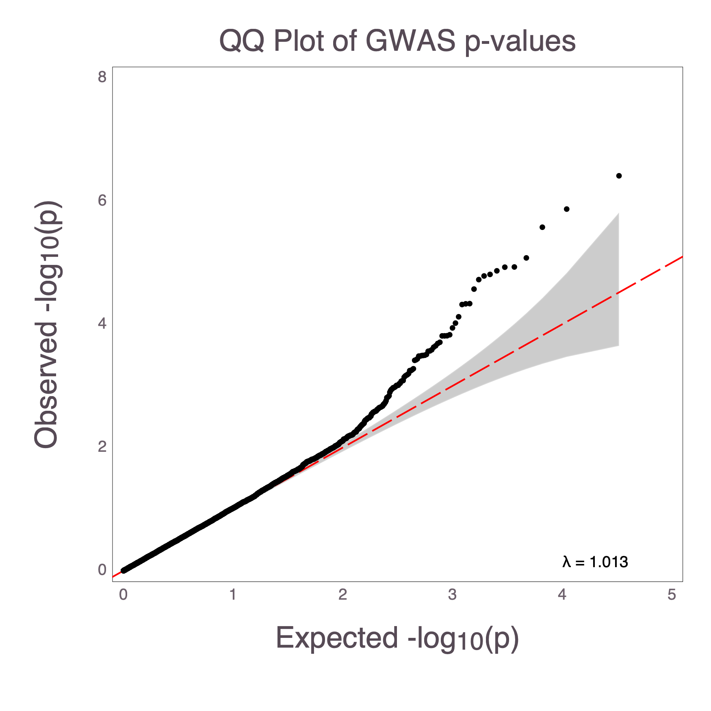
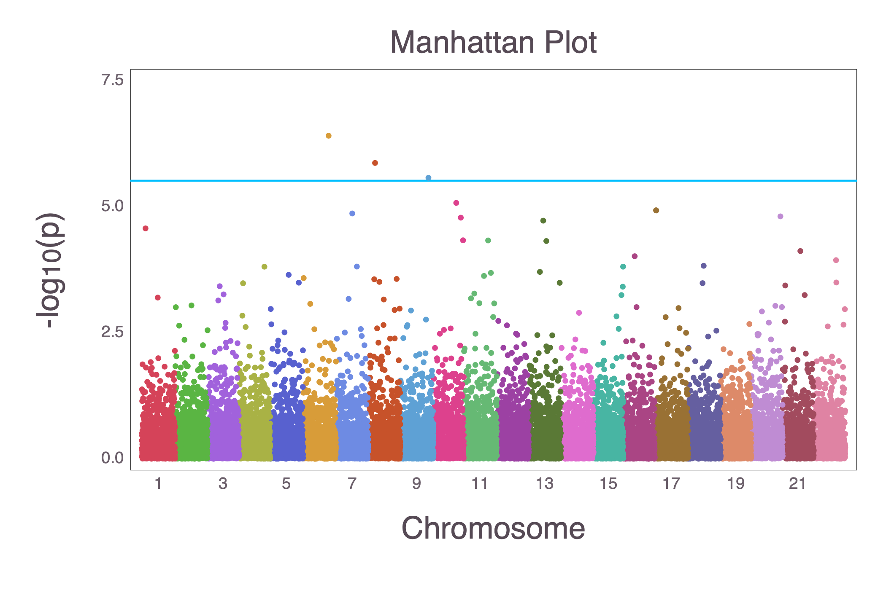
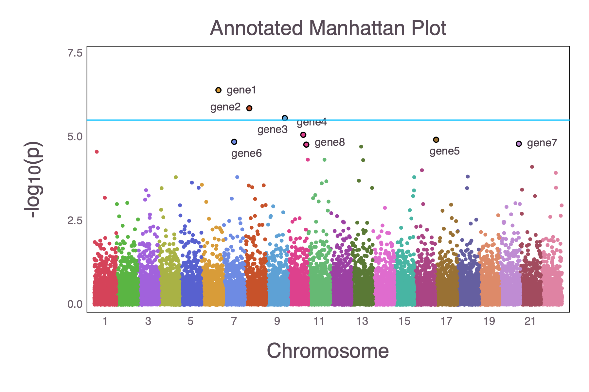
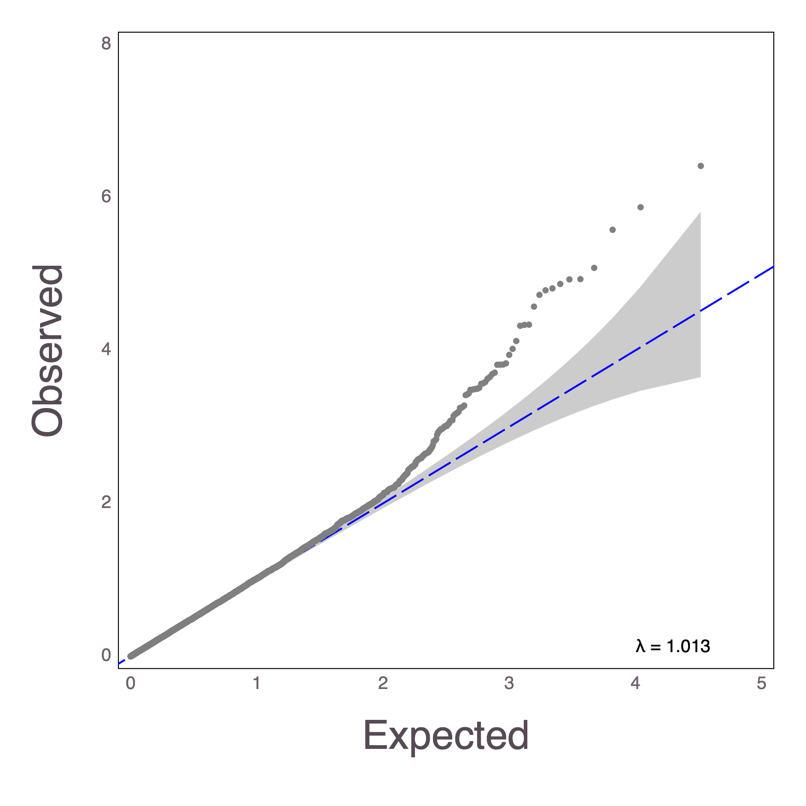

MendelPlots.jl
MendelPlots.jl is a Julia package for creating plots for genome-wide association studies (GWAS) results. The package can currently create Manhattan Plots and QQ Plots for GWAS data, specifically catered to the data files created from OpenMendel software packages MendelGWAS and PolrGWAS. The input needed is a dataframe (see DataFrames.jl) or individual features as arrays.
MendelPlots.jl uses Gadfly as the backend for plotting and saves the plots as .png files.
Installation
This package requires Julia v0.7.0 or later. The package has not yet been registered and must be installed using the repository location. Start julia and use the ] key to switch to the package manager REPL and proceed as follows:
(v1.5) pkg> add https://github.com/OpenMendel/MendelPlots.jl.git# machine information for this tutorial
versioninfo()Julia Version 1.5.2
Commit 539f3ce943 (2020-09-23 23:17 UTC)
Platform Info:
OS: macOS (x86_64-apple-darwin18.7.0)
CPU: Intel(R) Core(TM) i7-4850HQ CPU @ 2.30GHz
WORD_SIZE: 64
LIBM: libopenlibm
LLVM: libLLVM-9.0.1 (ORCJIT, haswell)
Environment:
JULIA_NUM_THREADS = 4For use in this tutorial, we will load the following packages:
using TextParse, DataFrames, MendelPlotsExample dataset
The data folder of the package in test contains an example simulated data set. In this tutorial, we use relative path ../data. In general, the user can locate this folder by the following command:
import MendelPlots
joinpath(dirname(pathof(MendelPlots)), "../test/data");ls -l ../test/datatotal 832
-rw-r--r-- 1 christophergerman staff 424332 Jan 24 00:05 gwasresults.txtBasic usage
The following commands can be used to load the test dataset into a dataframe to be used to create plots.
data, colnames = csvread("../test/data/gwasresults.txt", ',', header_exists = true)
df = DataFrame([i for i in data], Symbol.(colnames))<table class="data-frame"><thead><tr><th></th><th>pval</th><th>chr</th><th>pos</th><th>gene</th></tr><tr><th></th><th>Float64</th><th>Int64</th><th>Int64</th><th>String</th></tr></thead><tbody><p>16,500 rows × 4 columns</p><tr><th>1</th><td>0.434119</td><td>1</td><td>1</td><td></td></tr><tr><th>2</th><td>0.61908</td><td>1</td><td>2</td><td></td></tr><tr><th>3</th><td>0.909921</td><td>1</td><td>3</td><td></td></tr><tr><th>4</th><td>0.0419107</td><td>1</td><td>4</td><td></td></tr><tr><th>5</th><td>0.344776</td><td>1</td><td>5</td><td></td></tr><tr><th>6</th><td>0.308763</td><td>1</td><td>6</td><td></td></tr><tr><th>7</th><td>0.687524</td><td>1</td><td>7</td><td></td></tr><tr><th>8</th><td>0.0716104</td><td>1</td><td>8</td><td></td></tr><tr><th>9</th><td>0.882899</td><td>1</td><td>9</td><td></td></tr><tr><th>10</th><td>0.762597</td><td>1</td><td>10</td><td></td></tr><tr><th>11</th><td>0.824667</td><td>1</td><td>11</td><td></td></tr><tr><th>12</th><td>0.521365</td><td>1</td><td>12</td><td></td></tr><tr><th>13</th><td>0.95395</td><td>1</td><td>13</td><td></td></tr><tr><th>14</th><td>0.491313</td><td>1</td><td>14</td><td></td></tr><tr><th>15</th><td>0.274445</td><td>1</td><td>15</td><td></td></tr><tr><th>16</th><td>0.0133856</td><td>1</td><td>16</td><td></td></tr><tr><th>17</th><td>0.990837</td><td>1</td><td>17</td><td></td></tr><tr><th>18</th><td>0.782683</td><td>1</td><td>18</td><td></td></tr><tr><th>19</th><td>0.206984</td><td>1</td><td>19</td><td></td></tr><tr><th>20</th><td>0.0443713</td><td>1</td><td>20</td><td></td></tr><tr><th>21</th><td>0.735768</td><td>1</td><td>21</td><td></td></tr><tr><th>22</th><td>0.336091</td><td>1</td><td>22</td><td></td></tr><tr><th>23</th><td>0.810657</td><td>1</td><td>23</td><td></td></tr><tr><th>24</th><td>0.593453</td><td>1</td><td>24</td><td></td></tr><tr><th>25</th><td>0.933379</td><td>1</td><td>25</td><td></td></tr><tr><th>26</th><td>0.867928</td><td>1</td><td>26</td><td></td></tr><tr><th>27</th><td>0.139833</td><td>1</td><td>27</td><td></td></tr><tr><th>28</th><td>0.0694416</td><td>1</td><td>28</td><td></td></tr><tr><th>29</th><td>0.228683</td><td>1</td><td>29</td><td></td></tr><tr><th>30</th><td>0.0627061</td><td>1</td><td>30</td><td></td></tr><tr><th>⋮</th><td>⋮</td><td>⋮</td><td>⋮</td><td>⋮</td></tr></tbody></table>
The basic commands for MendelPlots.jl are
qq()
manhattan()QQ Plots
The following command creates a qq plot from the data
qq(df)display("image/png", read("qqplot.png"))
For documentation of the qq function, type ?qq in Julia REPL.
MendelPlots.qq — Functionqq(pvalues::AbstractArray)Position arguments
pvalues::AbstractArray: pvalues. A one dimensional array containing pvalues to be used in the qqplot.qq(df::DataFrame)
Position arguments
df::DataFrame: DataFrame containing pvalues to be used in the qqplot. Note: The column of the dataframe
that indicates pvalues must be named pval (df[!, :pval] must exist)
Keyword arguments
titles::AbstractString: Title for the plot. Default is "QQ Plot of GWAS p-values".
To have blank enter "".
outfile::AbstractString: output name to save the QQplot. Name should end in format.
Default is "qqplot.png". Supports .png, .pdf, and .svg files.
dpi::Union{Float64, Int64}: dots per inch to save the png file. Higher DPI results in larger file with
higher resolution. Default dpi is 350.
xlabel::AbstractString: option to replace x-label textylabel::AbstractString: option to replace y-label textxmin::Union{Float64, Int64}: Specified minimum x value to represent on the plotxmax::Union{Float64, Int64}: Specified maximum x value to represent on the plotymin::Union{Float64, Int64}: Specified minimum y value to represent on the plotymax::Union{Float64, Int64}: Specified maximum y value to represent on the plotxstep: Step-size for x-axis label ticks. Default value is 1.ystep: Step-size for y-axis label ticks. Default value is 2.gifdist: Distance from right edge to print the genomic inflation factorλ. Default is 1.0.linecolor::AbstractString: Color of "normal" line. Default color is "red".dotcolor::AbstractString: Color of the dots. Default color is "black".fontsizesize of the axis labels. Default is "15pt".pvalvarvariable indicating pvalue column name (for dataframes only). Default is "pval".
Manhattan Plots
The following command creates a manhattan plot from the data
manhattan(df)display("image/png", read("manhattan.png"))
For documentation of the manhattan function, type ?manhattan in Julia REPL.
MendelPlots.manhattan — Functionmanhattan(data::DataFrame)Position arguments
data::DataFrame: A DataFrame containing information to be used in the Manhattan Plot.
Note, DataFrame must have the following values saved under the corresponding names. pvalues:pval, chromosome:chr. Additionally, the DataFrame must be in order of basepairs going from first to last if there's no position arguement. Optionally, if there is basepair information, then the position variable must be named pos.
manhattan(pvalues::AbstractArray, chr::AbstractArray)Position arguments
pvalues::AbstractArray: pvalues for the associated GWAS. Must be in the
order of the basepairs.
chr::AbstractArray: An array of chromosome identifiers for each pvalue.
Must match order with pvalues.
manhattan(pvalues::AbstractArray, chr::AbstractArray, pos::AbstractArray)Position arguments
pvalues::AbstractArray: pvalues for the associated GWAS.
Must be in the same order of the basepairs and chromosomes.
chr::AbstractArray: An array of chromosome identifiers for each pvalue.
Must match order with pvalues and positions.
pos::AbstractArray: An array of basepair positions for each pvalue/chromosome.
Must match order with pvalues and chromosomes.
Keyword arguments
titles::AbstractString: Title for the plot. Default is "Manhattan Plot".
To have blank enter "".
outfile::AbstractString: output name to save the manhattan plot. Name should end in format.
Default is "manhattan.png". Supports .png, .pdf, and .svg files.
dpi::Int64: dots per inch to save the png file. Higher DPI results in
larger file with higher resolution. Default dpi is 350.
xlabel::AbstractString: option to replace x-label textylabel::AbstractString: option to replace y-label textymax::Union{Float64, Int64}: Specified maximum y value to represent
on the plot
ystep: Step-size for y-axis label ticks. Default value is 2.5signifline::Union{Float64, Int64}: Line to draw significance at.
Default in Bonferonni corrected p-value for α = 0.05.
linecolor::AbstractString: Color for significance line. Default
is 'deepskyblue1'.
fontsizesize of the axis labels. Default is "15pt".pvalvarvariable indicating pvalue column name (for dataframes only). Default is "pval".chrvarvariable indicating chromosome column name (for dataframes only). Default is "chr".posvarvariable indicating BP position column name (for dataframes only). Default is "pos".annotatevarvariable indicating annotation column name (for dataframes only). Default is "gene".annotateindsindicies of rows to include as annotation for the manhattan plot. Default isnothing.
Necessary Inputs
qq expects either an DataFrame object input or an array of pvalues as an input. If a DataFrame is the input, the pvalues either must be stored under the name pval or you must use the pvalvar argument to the specify the variable name in the dataframe that corresponds to pvalue.
manhattan expects either an DataFrame object input or an array of pvalues and an array of chromosome IDs as an input. If a DataFrame is the input, the pvalues either must be stored under the name pval or you must use the pvalvar argument to the specify the variable name in the dataframe that corresponds to pvalue. The chromosomes and pvalues must correspond in order to each other, and must be ordered in according to ascending basepairs. The chromosome variable must either be named chr or the chromosome variable name must be specified using the chrvar argument. Optionally, if you have basepair location information in your DataFrame, the position variable must either be named pos or the BP position variable name must be specified using the posvar argument, but the basepair position isn't required to create a create a Manhattan plot.
Annotated Genes
Gene annotations may be displayed in the Manhattan plot if the information is available in the dataframe object. The annotation variable name can be specified with annotatevar. By default is it assumed to be :gene. The indicies (corresponding to the results dataframe) must be specified for annotations to be applied using the annotateinds option. For example, the top hits are the indicies (4380, 5470, 6722, 7374, 12061, 4936, 14978, 7481), so we can use those to annotate the Manhattan plot with their gene labels.
manhattan(df;
annotateinds = [4380
5470
6722
7374
12061
4936
14978
7481],
titles = "Annotated Manhattan Plot", dpi = 300,
outfile = "annotated_manhattan.png")display("image/png", read("annotated_manhattan.png"))
Additional Options
There are several other options that the qq and manhattan functions take, refer to the specific documentation for each function via the ? command to see the option names. Current options include arguments for qq line color, qq dot color, maximum x and y values, dpi, significance line y-value, significance line color, title, fontsize, and dataframe names of pvalues, chromosomes, and BP positions in your input dataframe.
You can utilize more options to create a more customized plot.
qq(df[!, :pval]; xlabel = "Expected", ylabel = "Observed",
titles = "", outfile = "testqq.png", dotcolor = "gray",
fontsize = 18pt, linecolor = "blue")display("image/png", read("testqq.png"))
manhattan(df; pvalvar = "pval", chrvar = "chr",
posvar = "pos", outfile = "manhattan2.pdf", fontsize = 18pt, linecolor = "red")Saving Files
qq, by default, outputs a .png named qqplot.png. Use the keyword argument 'outfile' to change the output file name. It will parse the output file name to ensure that the extension is compatible. Currently, we support .png, .pdf, and .svg files.
manhattan by default, outputs a .png named manhattan.png. Use the keyword argument 'outfile' to change the output file name. It will parse the output file name to ensure that the extension is compatible. Currently, we support .png, .pdf, and .svg files.